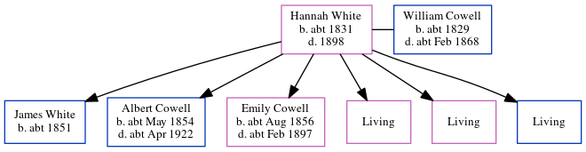

Hannah D Cowell (née White) c1831 - 1898
[ Home ] | [ Calendar ] | [ Surnames Index ] | [ Errors ] | [ Family History ]Hannah White, the wife of William Cowell (the three times great-uncle of Nigel Horne), was born in Stodmarsh, Kent, England c. 18311,2,3,4,5,6 and married William (a carter with whom she had 6 children: James, Albert, Emily Hannah, Sarah Ann, Susannah and William, along with 3 surviving children) in Bridge, Kent, England around Nov 18507.
During her life, she was living at her birthplace in 18411; in Wingham, Kent, England in 18512 and in 18613; at Chalk Pit in Wingham on 7 Apr 18618; in Wingham in 18714; and at Wingham Square in Wingham on 2 Apr 18719.
She died in 1898 in Eastry, Kent, England5,6 (jul/Aug/Sep) and was buried in Wingham on 13 Sept 18986.
Children
- James was born c. 1851
- Albert was born c. May 1854
- Emily Hannah was born c. Aug 1856
Citations
- 1841 England Census Online publication - Provo, UT, USA: The Generations Network, Inc., 2006.Original data - Census Returns of England and Wales, 1841. Kew, Surrey, England: The National Archives of the UK (TNA): Public Record Office (PRO), 1841. Data imaged from the National
- 1851 England Census Online publication - Provo, UT, USA: The Generations Network, Inc., 2005.Original data - Census Returns of England and Wales, 1851. Kew, Surrey, England: The National Archives of the UK (TNA): Public Record Office (PRO), 1851. Data imaged from the National
- 1861 England Census Online publication - Provo, UT, USA: The Generations Network, Inc., 2005.Original data - Census Returns of England and Wales, 1861. Kew, Surrey, England: The National Archives of the UK (TNA): Public Record Office (PRO), 1861. Data imaged from the National
- 1871 England Census Online publication - Provo, UT, USA: The Generations Network, Inc., 2004.Original data - Census Returns of England and Wales, 1871. Kew, Surrey, England: The National Archives of the UK (TNA): Public Record Office (PRO), 1871. Data imaged from the National
- England & Wales, FreeBMD Death Index: 1837-1915 Online publication - Provo, UT, USA: The Generations Network, Inc., 2006.Original data - General Register Office. England and Wales Civil Registration Indexes. London, England: General Register Office. © Crown copyright. Published by permission of the Cont
- England, Select Deaths and Burials, 1538-1991 Ancestry.com Operations, Inc.
- England & Wales Marriages 1837-2005 - Findmypast
- 1861 England, Wales & Scotland Census - Findmypast (was age 30 and the wife of the head of the household)
- 1871 England, Wales & Scotland Census - Findmypast (was age 40 and the head of the household)
Media
1851 England, Wales & Scotland Census Transcription - GBC-1851-0005915476
1861 England, Wales & Scotland Census - GBC/1861/0003563927
Family Tree
Map
Generated by ged2site. Last updated on Jul 3, 2024